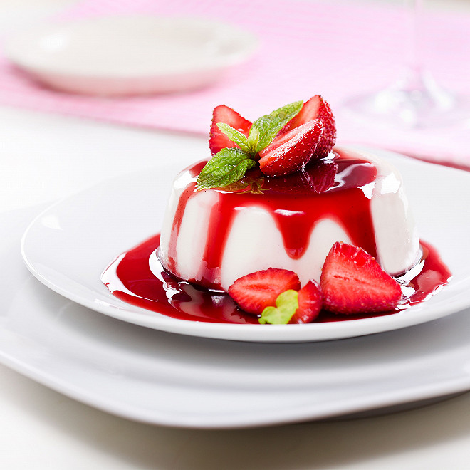

Panna Cotta

Qu'est-ce donc?
La panna cotta est un dessert traditionnel de la cuisine italienne, originaire
du Piémont, mais populaire dans toute l'Italie, à base de crème, lait, sucre,
et gélatine.
Ingrédients
- Crème fraiche
- Lait
- Sucre
- Gélatine
Recette
- Faire chauffer le lait
- Une fois à ébullition, ajouter la gélatine
- Laisser refroidir puis reposer 2h au frigo